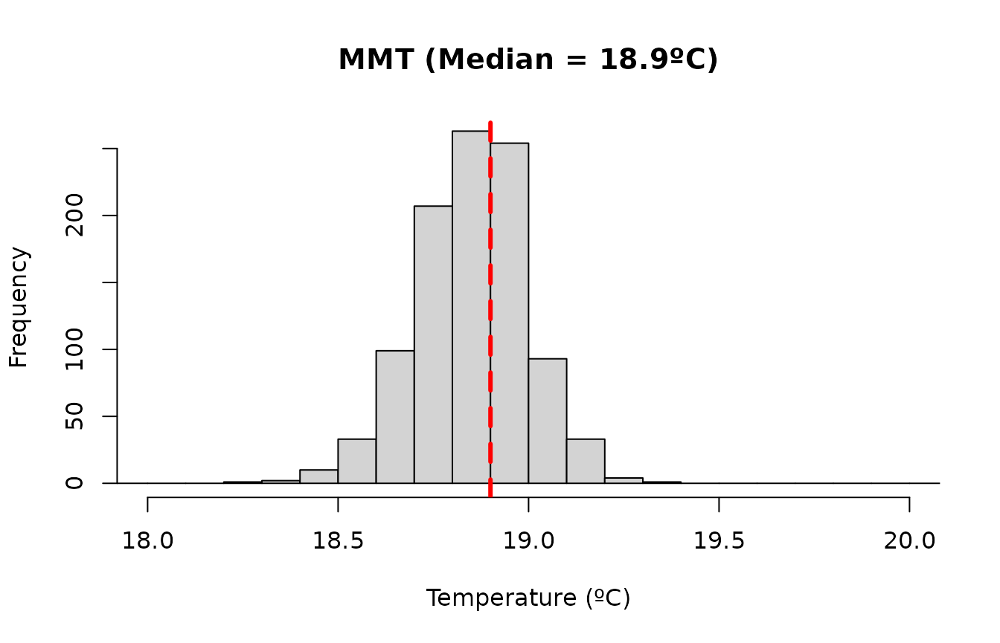
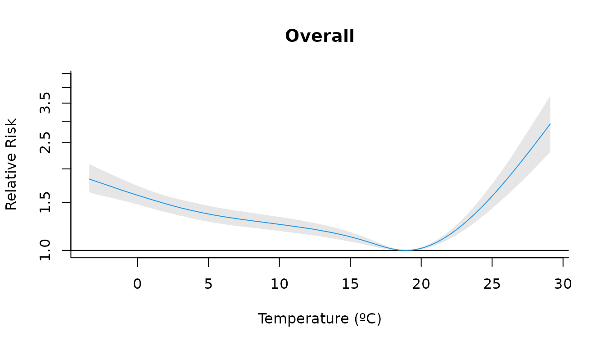
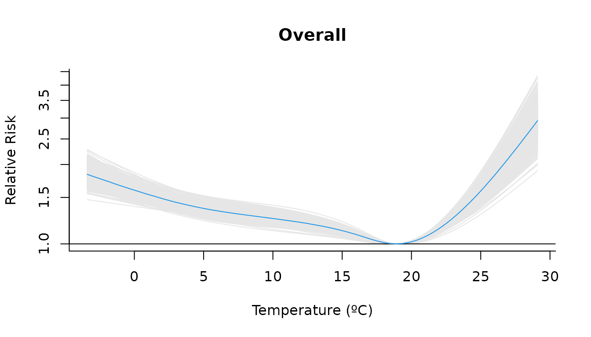
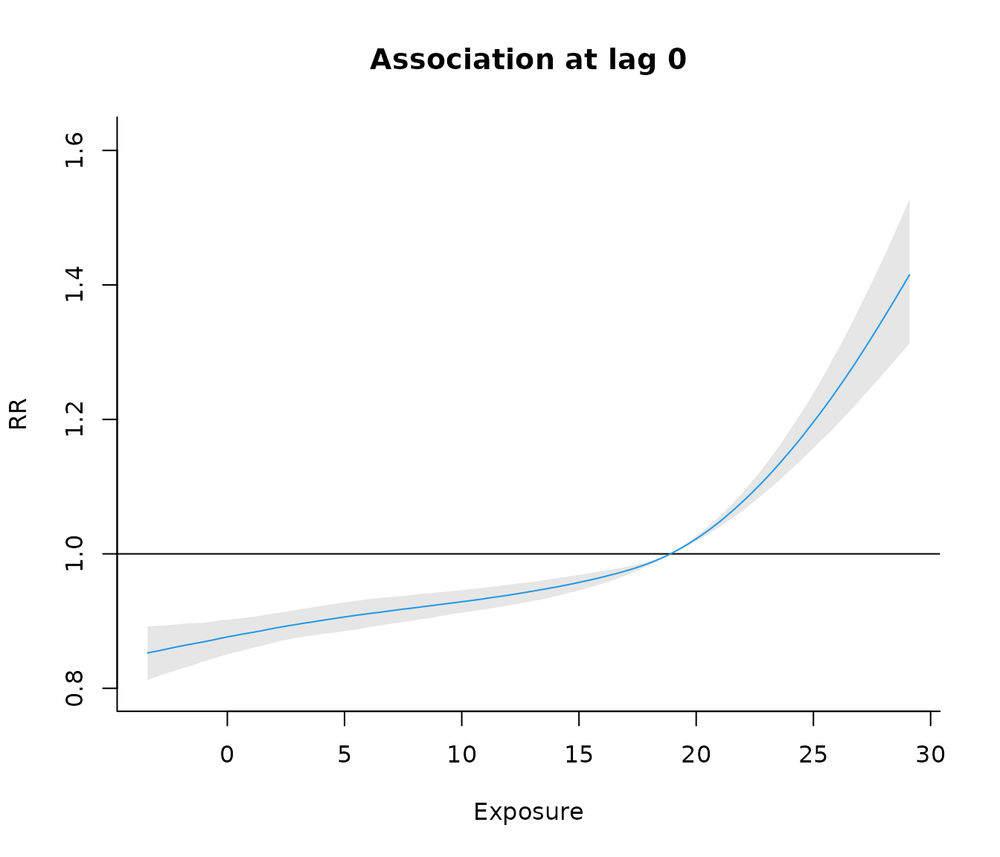

london dataset
As an example for this vignette, we will use the built-in dataset
london which contains daily temperature and mortality data
from 2000 to 2012.
head(london)
#> date year dow tmean mort_00_74 mort_75plus mort
#> 1 2000-01-01 2000 Sat 7.642016 101 226 327
#> 2 2000-01-02 2000 Sun 8.351041 100 191 291
#> 3 2000-01-03 2000 Mon 8.188446 107 205 312
#> 4 2000-01-04 2000 Tue 6.320066 97 191 288
#> 5 2000-01-05 2000 Wed 6.550981 92 213 305
#> 6 2000-01-06 2000 Thu 8.728774 82 213 295Using Bayesian Distributed Non-Linear Models (B-DLNM) we will estimate the lagged effect of the temperature exposure to mortality in the population with more than 75 years old, taking 21 days of lags, in the city of London (2000-2012).
Set DLNM parameters
We will start by building the crossbasis with the dlnm
package.
We will use a natural spline with three knots for the exposure–response function, placed at the 10th, 75th, and 90th percentiles of daily mean temperature, and a natural spline for the lag–response function, with knots equally spaced on the log scale up to a maximum lag of 21 days:
# Exposure-response and lag-response spline parameters
dlnm_var <- list(
var_prc = c(10, 75, 90),
var_fun = "ns",
lag_fun = "ns",
max_lag = 21,
lagnk = 3
)
# Cross-basis parameters
argvar <- list(
fun = dlnm_var$var_fun,
knots = quantile(london$tmean, dlnm_var$var_prc / 100, na.rm = TRUE),
Bound = range(london$tmean, na.rm = TRUE)
)
arglag <- list(
fun = dlnm_var$lag_fun,
knots = logknots(dlnm_var$max_lag, nk = dlnm_var$lagnk)
)
# Create crossbasis
cb <- crossbasis(london$tmean, lag = dlnm_var$max_lag, argvar, arglag)Let’s define the seasonality of the mortality time series using a natural spline with 8 degrees of freedom per year, which flexibly controls for long-term and seasonal trends in mortality:
# Seasonality of mortality time series
seas <- ns(london$date, df = round(8 * length(london$date) / 365.25))Finally, we also define the temperature values for which predictions will be generated. These correspond to an evenly spaced grid with a 0.1ºC step covering the full range of observed temperatures in the data:
Fit the model and posterior samples
Fit the Bayesian DLNM using the function bdlnm(). In
this example, we specify a Poisson model including the cross-basis term,
a seasonal component, and an indicator for the day of the week. We draw
1000 samples from the posterior distribution and set a seed for
reproducibility.
mod <- bdlnm(
mort_75plus ~ cb + factor(dow) + seas,
data = london,
family = "poisson",
sample.arg = list(n = 1000, seed = 5243)
)
#> Warning in inla.posterior.sample(n, rfake, intern = intern, use.improved.mean =
#> use.improved.mean, : Since 'seed!=0', parallel model is disabled and serial
#> model is selected, num.threads='1:1'The returned object is of class bdlnm and contains the fitted INLA model, the crossbasis objects included in the formula, and posterior samples of the estimated coefficients together with their summaries (mean, standard deviation, and quantiles).
str(mod, max.level = 1)
#> List of 4
#> $ model :List of 49
#> ..- attr(*, "class")= chr "inla"
#> $ basis :List of 1
#> $ coefficients : num [1:123, 1:1000] 5.3638 -0.1381 -0.0152 -0.0464 0.0602 ...
#> ..- attr(*, "dimnames")=List of 2
#> $ coefficients.summary: num [1:123, 1:6] 5.2105 -0.1345 -0.0064 -0.0497 0.05 ...
#> ..- attr(*, "dimnames")=List of 2
#> - attr(*, "n_sim")= num 1000
#> - attr(*, "class")= chr "bdlnm"Minimum mortality temperature
We estimate the minimum mortality temperature (MMT), defined as the temperature at which the overall mortality risk is minimized. This optimal value will later be used to center the estimated relative risks.
mmt <- optimal_exposure(mod, exp_at = temp)
#> Registered S3 method overwritten by 'crs':
#> method from
#> print.crs sf
str(mmt)
#> List of 2
#> $ est : Named num [1:1000] 19 18.8 18.8 18.8 19.2 18.8 18.9 19.1 18.9 19 ...
#> ..- attr(*, "names")= chr [1:1000] "sample1" "sample2" "sample3" "sample4" ...
#> $ summary: Named num [1:6] 18.9 0.147 18.6 18.9 19.2 ...
#> ..- attr(*, "names")= chr [1:6] "mean" "sd" "0.025quant" "0.5quant" ...
#> - attr(*, "exp_at")= num [1:326] -3.4 -3.3 -3.2 -3.1 -3 -2.9 -2.8 -2.7 -2.6 -2.5 ...
#> - attr(*, "lag_at")= num [1:22] 0 1 2 3 4 5 6 7 8 9 ...
#> - attr(*, "which")= chr "min"
#> - attr(*, "class")= chr "optimal_exposure"We can visualize the posterior distribution of the MMT estimates. It is useful to inspect this distribution to assess whether multiple candidate optimal exposure values exist and to verify that the median provides a reasonable centering value:
plot(
mmt,
xlab = "Temperature (ºC)",
main = paste0("MMT (Median = ", round(mmt$summary[["0.5quant"]], 1), "ºC)")
)
To make the predictions, we will center the risk at the median of these values:
cen <- mmt$summary[["0.5quant"]]
cen
#> [1] 18.9Predict exposure-lag-response effects
Predict the exposure–lag–response association between temperature and mortality from the fitted model at the supplied temperature grid, centering the predictions at the MMT value:
cpred <- bcrosspred(mod, exp_at = temp, cen = cen)A bcrosspred object is returned containing posterior
samples of the estimated exposure–lag–response association for the
supplied temperature values and lags, together with their summaries.
str(cpred)
#> List of 16
#> $ exp_at : num [1:326] -3.4 -3.3 -3.2 -3.1 -3 -2.9 -2.8 -2.7 -2.6 -2.5 ...
#> $ lag_at : num [1:22] 0 1 2 3 4 5 6 7 8 9 ...
#> $ cen : num 18.9
#> $ coefficients : num [1:20, 1:1000] -0.1381 -0.0152 -0.0464 0.0602 -0.0556 ...
#> ..- attr(*, "dimnames")=List of 2
#> .. ..$ : chr [1:20] "cbv1.l1" "cbv1.l2" "cbv1.l3" "cbv1.l4" ...
#> .. ..$ : chr [1:1000] "sample1" "sample2" "sample3" "sample4" ...
#> $ matfit : num [1:326, 1:22, 1:1000] -0.168 -0.167 -0.166 -0.165 -0.164 ...
#> ..- attr(*, "dimnames")=List of 3
#> .. ..$ : chr [1:326] "-3.4" "-3.3" "-3.2" "-3.1" ...
#> .. ..$ : chr [1:22] "lag0" "lag1" "lag2" "lag3" ...
#> .. ..$ : chr [1:1000] "sample1" "sample2" "sample3" "sample4" ...
#> $ allfit : num [1:326, 1:1000] 0.683 0.677 0.672 0.666 0.661 ...
#> ..- attr(*, "dimnames")=List of 2
#> .. ..$ : chr [1:326] "-3.4" "-3.3" "-3.2" "-3.1" ...
#> .. ..$ : chr [1:1000] "sample1" "sample2" "sample3" "sample4" ...
#> $ matRRfit : num [1:326, 1:22, 1:1000] 0.846 0.846 0.847 0.848 0.848 ...
#> ..- attr(*, "dimnames")=List of 3
#> .. ..$ : chr [1:326] "-3.4" "-3.3" "-3.2" "-3.1" ...
#> .. ..$ : chr [1:22] "lag0" "lag1" "lag2" "lag3" ...
#> .. ..$ : chr [1:1000] "sample1" "sample2" "sample3" "sample4" ...
#> $ allRRfit : num [1:326, 1:1000] 1.98 1.97 1.96 1.95 1.94 ...
#> ..- attr(*, "dimnames")=List of 2
#> .. ..$ : chr [1:326] "-3.4" "-3.3" "-3.2" "-3.1" ...
#> .. ..$ : chr [1:1000] "sample1" "sample2" "sample3" "sample4" ...
#> $ coefficients.summary: num [1:20, 1:6] -0.1345 -0.0064 -0.0497 0.05 -0.0491 ...
#> ..- attr(*, "dimnames")=List of 2
#> .. ..$ : chr [1:20] "cbv1.l1" "cbv1.l2" "cbv1.l3" "cbv1.l4" ...
#> .. ..$ : chr [1:6] "mean" "sd" "0.025quant" "0.5quant" ...
#> $ matfit.summary : num [1:326, 1:22, 1:6] -0.16 -0.159 -0.158 -0.157 -0.156 ...
#> ..- attr(*, "dimnames")=List of 3
#> .. ..$ : chr [1:326] "-3.4" "-3.3" "-3.2" "-3.1" ...
#> .. ..$ : chr [1:22] "lag0" "lag1" "lag2" "lag3" ...
#> .. ..$ : chr [1:6] "mean" "sd" "0.025quant" "0.5quant" ...
#> $ allfit.summary : num [1:326, 1:6] 0.61 0.606 0.601 0.597 0.593 ...
#> ..- attr(*, "dimnames")=List of 2
#> .. ..$ : chr [1:326] "-3.4" "-3.3" "-3.2" "-3.1" ...
#> .. ..$ : chr [1:6] "mean" "sd" "0.025quant" "0.5quant" ...
#> $ matRRfit.summary : num [1:326, 1:22, 1:6] 0.853 0.853 0.854 0.855 0.855 ...
#> ..- attr(*, "dimnames")=List of 3
#> .. ..$ : chr [1:326] "-3.4" "-3.3" "-3.2" "-3.1" ...
#> .. ..$ : chr [1:22] "lag0" "lag1" "lag2" "lag3" ...
#> .. ..$ : chr [1:6] "mean" "sd" "0.025quant" "0.5quant" ...
#> $ allRRfit.summary : num [1:326, 1:6] 1.84 1.83 1.82 1.82 1.81 ...
#> ..- attr(*, "dimnames")=List of 2
#> .. ..$ : chr [1:326] "-3.4" "-3.3" "-3.2" "-3.1" ...
#> .. ..$ : chr [1:6] "mean" "sd" "0.025quant" "0.5quant" ...
#> $ ci.level : num 0.95
#> $ model.class : chr "inla"
#> $ model.link : chr "log"
#> - attr(*, "class")= chr "bcrosspred"For instance, the estimated crossbasis coefficients are
stored as:
cpred$coefficients |>
head(c(5, 5))
#> sample1 sample2 sample3 sample4 sample5
#> cbv1.l1 -0.13808615 -0.132009676 -0.129815057 -0.119547680 -0.13601590
#> cbv1.l2 -0.01517507 -0.009297762 0.008822308 -0.003421644 -0.00598265
#> cbv1.l3 -0.04639142 -0.036821678 -0.058903768 -0.046856154 -0.04127753
#> cbv1.l4 0.06021475 0.046470398 0.035853137 0.038675889 0.04695226
#> cbv1.l5 -0.05556018 -0.049523828 -0.030615227 -0.036304584 -0.04953768The relative risks (RR) for each temperature–lag combination are also stored in an array for each posterior sample. For example, for the first sample:
cpred$matRRfit[,, "sample1"] |>
head()
#> lag0 lag1 lag2 lag3 lag4 lag5 lag6 lag7
#> -3.4 0.8457344 1.076681 1.144447 1.101760 1.065751 1.044707 1.034080 1.029875
#> -3.3 0.8464125 1.075891 1.143224 1.100929 1.065235 1.044379 1.033854 1.029698
#> -3.2 0.8470911 1.075103 1.142002 1.100099 1.064720 1.044051 1.033628 1.029521
#> -3.1 0.8477701 1.074315 1.140781 1.099269 1.064204 1.043724 1.033403 1.029344
#> -3 0.8484495 1.073528 1.139563 1.098441 1.063690 1.043396 1.033177 1.029167
#> -2.9 0.8491293 1.072742 1.138346 1.097613 1.063175 1.043069 1.032952 1.028990
#> lag8 lag9 lag10 lag11 lag12 lag13 lag14 lag15
#> -3.4 1.028368 1.027321 1.026551 1.026034 1.025748 1.025668 1.025771 1.026036
#> -3.3 1.028214 1.027183 1.026421 1.025906 1.025616 1.025528 1.025618 1.025866
#> -3.2 1.028061 1.027044 1.026291 1.025778 1.025485 1.025388 1.025465 1.025696
#> -3.1 1.027908 1.026906 1.026161 1.025650 1.025353 1.025248 1.025312 1.025526
#> -3 1.027754 1.026768 1.026031 1.025523 1.025222 1.025108 1.025159 1.025356
#> -2.9 1.027601 1.026629 1.025901 1.025395 1.025090 1.024968 1.025006 1.025186
#> lag16 lag17 lag18 lag19 lag20 lag21
#> -3.4 1.026439 1.026957 1.027567 1.028246 1.028972 1.029722
#> -3.3 1.026248 1.026743 1.027327 1.027980 1.028677 1.029398
#> -3.2 1.026058 1.026529 1.027088 1.027713 1.028383 1.029074
#> -3.1 1.025867 1.026316 1.026849 1.027447 1.028088 1.028751
#> -3 1.025677 1.026102 1.026610 1.027181 1.027794 1.028428
#> -2.9 1.025487 1.025889 1.026372 1.026916 1.027500 1.028105The overall cumulative effects for each temperature (summing across all lags) are stored in:
cpred$allRRfit |>
head(c(5, 5))
#> sample1 sample2 sample3 sample4 sample5
#> -3.4 1.979549 1.756762 1.694665 1.770495 1.831634
#> -3.3 1.968597 1.751043 1.689260 1.762785 1.823671
#> -3.2 1.957709 1.745343 1.683873 1.755110 1.815744
#> -3.1 1.946884 1.739662 1.678505 1.747471 1.807853
#> -3 1.936125 1.734002 1.673155 1.739868 1.800000Summaries of these effects across posterior samples are also available:
cpred$matRRfit.summary |>
head(5)
#> , , mean
#>
#> lag0 lag1 lag2 lag3 lag4 lag5 lag6 lag7
#> -3.4 0.8525639 1.071110 1.134564 1.094336 1.060407 1.040591 1.030615 1.026706
#> -3.3 0.8532609 1.070506 1.133563 1.093654 1.059982 1.040316 1.030419 1.026544
#> -3.2 0.8539585 1.069903 1.132563 1.092972 1.059557 1.040041 1.030222 1.026383
#> -3.1 0.8546564 1.069301 1.131565 1.092291 1.059132 1.039766 1.030026 1.026221
#> -3 0.8553548 1.068699 1.130567 1.091611 1.058707 1.039491 1.029830 1.026060
#> lag8 lag9 lag10 lag11 lag12 lag13 lag14 lag15
#> -3.4 1.025330 1.024364 1.023636 1.023126 1.022813 1.022677 1.022700 1.022861
#> -3.3 1.025184 1.024229 1.023508 1.023002 1.022690 1.022554 1.022573 1.022728
#> -3.2 1.025038 1.024094 1.023380 1.022878 1.022568 1.022431 1.022446 1.022596
#> -3.1 1.024892 1.023959 1.023253 1.022755 1.022446 1.022307 1.022319 1.022464
#> -3 1.024746 1.023824 1.023125 1.022631 1.022324 1.022184 1.022193 1.022331
#> lag16 lag17 lag18 lag19 lag20 lag21
#> -3.4 1.023140 1.023518 1.023975 1.024491 1.025048 1.025624
#> -3.3 1.023000 1.023370 1.023817 1.024323 1.024868 1.025433
#> -3.2 1.022861 1.023221 1.023659 1.024154 1.024688 1.025242
#> -3.1 1.022721 1.023073 1.023501 1.023986 1.024509 1.025051
#> -3 1.022582 1.022925 1.023344 1.023818 1.024329 1.024860
#>
#> , , sd
#>
#> lag0 lag1 lag2 lag3 lag4 lag5 lag6 lag7
#> -3.4 1.023869 1.011449 1.013375 1.006872 1.006088 1.006823 1.006248 1.004875
#> -3.3 1.023576 1.011306 1.013211 1.006790 1.006015 1.006740 1.006172 1.004815
#> -3.2 1.023284 1.011164 1.013047 1.006709 1.005943 1.006658 1.006096 1.004755
#> -3.1 1.022994 1.011023 1.012885 1.006628 1.005872 1.006576 1.006021 1.004696
#> -3 1.022706 1.010883 1.012723 1.006548 1.005801 1.006495 1.005946 1.004638
#> lag8 lag9 lag10 lag11 lag12 lag13 lag14 lag15
#> -3.4 1.003831 1.003630 1.003866 1.004134 1.004256 1.004198 1.003998 1.003757
#> -3.3 1.003783 1.003584 1.003817 1.004081 1.004202 1.004145 1.003948 1.003710
#> -3.2 1.003736 1.003538 1.003768 1.004029 1.004149 1.004092 1.003898 1.003663
#> -3.1 1.003688 1.003493 1.003719 1.003977 1.004095 1.004040 1.003848 1.003617
#> -3 1.003642 1.003448 1.003671 1.003925 1.004042 1.003988 1.003799 1.003571
#> lag16 lag17 lag18 lag19 lag20 lag21
#> -3.4 1.003633 1.003811 1.004392 1.005336 1.006539 1.007899
#> -3.3 1.003588 1.003764 1.004337 1.005270 1.006457 1.007800
#> -3.2 1.003543 1.003716 1.004283 1.005203 1.006376 1.007701
#> -3.1 1.003498 1.003670 1.004228 1.005138 1.006295 1.007603
#> -3 1.003454 1.003623 1.004175 1.005072 1.006214 1.007506
#>
#> , , 0.025quant
#>
#> lag0 lag1 lag2 lag3 lag4 lag5 lag6 lag7
#> -3.4 0.8125569 1.048275 1.106863 1.079979 1.048024 1.026518 1.016999 1.016606
#> -3.3 0.8138185 1.048004 1.106306 1.079455 1.047745 1.026469 1.017054 1.016582
#> -3.2 0.8150840 1.047739 1.105655 1.078806 1.047467 1.026421 1.017110 1.016534
#> -3.1 0.8163510 1.047474 1.104988 1.078233 1.047189 1.026372 1.017167 1.016471
#> -3 0.8176194 1.047209 1.104454 1.077842 1.046901 1.026282 1.017223 1.016409
#> lag8 lag9 lag10 lag11 lag12 lag13 lag14 lag15
#> -3.4 1.017900 1.017343 1.016267 1.015137 1.014707 1.014746 1.015089 1.015411
#> -3.3 1.017816 1.017305 1.016202 1.015096 1.014664 1.014745 1.015087 1.015347
#> -3.2 1.017733 1.017266 1.016239 1.015082 1.014614 1.014744 1.015080 1.015267
#> -3.1 1.017688 1.017196 1.016282 1.015073 1.014585 1.014693 1.015048 1.015187
#> -3 1.017630 1.017126 1.016201 1.015065 1.014602 1.014657 1.015019 1.015156
#> lag16 lag17 lag18 lag19 lag20 lag21
#> -3.4 1.015816 1.015894 1.015614 1.013912 1.012342 1.010621
#> -3.3 1.015765 1.015859 1.015522 1.013860 1.012291 1.010651
#> -3.2 1.015710 1.015819 1.015474 1.013818 1.012259 1.010707
#> -3.1 1.015657 1.015788 1.015425 1.013816 1.012217 1.010763
#> -3 1.015602 1.015745 1.015401 1.013813 1.012123 1.010819
#>
#> , , 0.5quant
#>
#> lag0 lag1 lag2 lag3 lag4 lag5 lag6 lag7
#> -3.4 0.8526943 1.070839 1.134673 1.094315 1.060496 1.040538 1.030622 1.026605
#> -3.3 0.8533806 1.070176 1.133677 1.093683 1.060051 1.040269 1.030416 1.026431
#> -3.2 0.8540791 1.069575 1.132726 1.093028 1.059595 1.039999 1.030211 1.026253
#> -3.1 0.8547302 1.068958 1.131754 1.092297 1.059188 1.039711 1.030013 1.026083
#> -3 0.8553931 1.068470 1.130761 1.091622 1.058799 1.039463 1.029827 1.025915
#> lag8 lag9 lag10 lag11 lag12 lag13 lag14 lag15
#> -3.4 1.025283 1.024389 1.023543 1.022921 1.022569 1.022505 1.022549 1.022799
#> -3.3 1.025122 1.024265 1.023405 1.022813 1.022456 1.022387 1.022433 1.022671
#> -3.2 1.024960 1.024141 1.023247 1.022702 1.022349 1.022295 1.022310 1.022522
#> -3.1 1.024810 1.024009 1.023136 1.022597 1.022226 1.022135 1.022178 1.022414
#> -3 1.024694 1.023867 1.023021 1.022470 1.022101 1.022013 1.022050 1.022282
#> lag16 lag17 lag18 lag19 lag20 lag21
#> -3.4 1.023184 1.023538 1.023998 1.024482 1.024965 1.025443
#> -3.3 1.023043 1.023388 1.023820 1.024348 1.024802 1.025226
#> -3.2 1.022902 1.023220 1.023660 1.024207 1.024604 1.025030
#> -3.1 1.022757 1.023076 1.023484 1.024038 1.024436 1.024850
#> -3 1.022602 1.022911 1.023315 1.023871 1.024326 1.024682
#>
#> , , 0.975quant
#>
#> lag0 lag1 lag2 lag3 lag4 lag5 lag6 lag7
#> -3.4 0.8921210 1.095807 1.162632 1.109167 1.072757 1.054492 1.043252 1.036300
#> -3.3 0.8923222 1.094841 1.161429 1.108287 1.072255 1.054026 1.042931 1.036002
#> -3.2 0.8925132 1.093928 1.160279 1.107384 1.071718 1.053556 1.042544 1.035705
#> -3.1 0.8926927 1.093005 1.159125 1.106481 1.071134 1.053077 1.042177 1.035408
#> -3 0.8929112 1.092090 1.157978 1.105579 1.070632 1.052596 1.041801 1.035148
#> lag8 lag9 lag10 lag11 lag12 lag13 lag14 lag15
#> -3.4 1.032881 1.031477 1.031707 1.031781 1.031979 1.031572 1.031042 1.030689
#> -3.3 1.032594 1.031257 1.031482 1.031509 1.031651 1.031349 1.030788 1.030453
#> -3.2 1.032352 1.031036 1.031263 1.031275 1.031412 1.031126 1.030561 1.030202
#> -3.1 1.032099 1.030815 1.031044 1.031041 1.031173 1.030903 1.030388 1.029949
#> -3 1.031797 1.030595 1.030826 1.030869 1.030934 1.030673 1.030094 1.029707
#> lag16 lag17 lag18 lag19 lag20 lag21
#> -3.4 1.030608 1.031391 1.033244 1.035166 1.038253 1.041319
#> -3.3 1.030400 1.031183 1.032956 1.034849 1.037845 1.040882
#> -3.2 1.030170 1.030935 1.032668 1.034532 1.037438 1.040535
#> -3.1 1.029878 1.030678 1.032380 1.034216 1.037200 1.040171
#> -3 1.029591 1.030421 1.032092 1.033909 1.036806 1.039773
#>
#> , , mode
#>
#> lag0 lag1 lag2 lag3 lag4 lag5 lag6 lag7
#> -3.4 0.8564739 1.069470 1.137046 1.094306 1.060852 1.038516 1.028928 1.026278
#> -3.3 0.8568107 1.068749 1.136055 1.093560 1.060539 1.038327 1.028809 1.026113
#> -3.2 0.8571546 1.068035 1.134850 1.092818 1.060162 1.038140 1.028691 1.025950
#> -3.1 0.8575055 1.067324 1.133865 1.092079 1.059692 1.037954 1.028574 1.025770
#> -3 0.8580752 1.066618 1.132671 1.091321 1.059317 1.037767 1.028552 1.025622
#> lag8 lag9 lag10 lag11 lag12 lag13 lag14 lag15
#> -3.4 1.025338 1.024247 1.022982 1.021905 1.021693 1.022412 1.022519 1.022659
#> -3.3 1.025180 1.024113 1.022866 1.021801 1.021518 1.022223 1.022327 1.022549
#> -3.2 1.025019 1.023978 1.022687 1.021695 1.021413 1.022034 1.022197 1.022438
#> -3.1 1.024814 1.023842 1.022571 1.021588 1.021236 1.021845 1.022022 1.022270
#> -3 1.024630 1.023759 1.022393 1.021479 1.021127 1.021656 1.021855 1.022157
#> lag16 lag17 lag18 lag19 lag20 lag21
#> -3.4 1.023519 1.023611 1.023974 1.024678 1.024571 1.024702
#> -3.3 1.023449 1.023408 1.023821 1.024503 1.024384 1.024500
#> -3.2 1.023324 1.023205 1.023586 1.024426 1.024197 1.024297
#> -3.1 1.023200 1.023070 1.023434 1.024250 1.024010 1.024094
#> -3 1.023075 1.022870 1.023282 1.024169 1.023936 1.023892
cpred$allRRfit.summary |>
head(5)
#> mean sd 0.025quant 0.5quant 0.975quant mode
#> -3.4 1.840299 1.064665 1.638181 1.835435 2.085973 1.830668
#> -3.3 1.832510 1.063836 1.632333 1.827065 2.073262 1.824926
#> -3.2 1.824755 1.063012 1.626506 1.819506 2.060832 1.817343
#> -3.1 1.817034 1.062195 1.620723 1.811353 2.048443 1.811584
#> -3 1.809349 1.061385 1.615515 1.803692 2.035540 1.804041Plot
Several visualizations can be produced from these predictions using
the plot() method.
For example, we can plot the overall cumulative effect for each temperature value (suming across all lags):
plot(
cpred,
"overall",
xlab = "Temperature (ºC)",
ylab = "Relative Risk",
col = 4,
main = "Overall",
log = "y"
)
Alternatively, we can display the posterior sampling variability by plotting the curves from all posterior samples instead of the credible interval:
plot(
cpred,
"overall",
xlab = "Temperature (ºC)",
ylab = "Relative Risk",
col = 4,
main = "Overall",
log = "y",
ci = "sampling"
)
We can also visualize the full exposure–lag–response association using a 3-D surface:
plot(
cpred,
"3d",
zlab = "Relative risk",
col = 4,
lphi = 60,
cex.axis = 0.6,
xlab = "Temperature (ºC)",
main = "3D graph of temperature effect"
)A contour plot provides a 2-D projection of the same relationship:
plot(
cpred,
"contour",
xlab = "Temperature (ºC)",
ylab = "Lag",
main = "Contour plot"
)
We can also examine the lag–response association for a high temperature (e.g., the 99th percentile):
htemp <- round(quantile(london$tmean, 0.99), 1)
plot(
cpred,
"slices",
ci = "bars",
type = "p",
pch = 19,
exp_at = htemp,
ylab = "RR",
main = paste0("Association for a high temperature (", htemp, "ºC)")
)Or the exposure–response association at lag 0:
